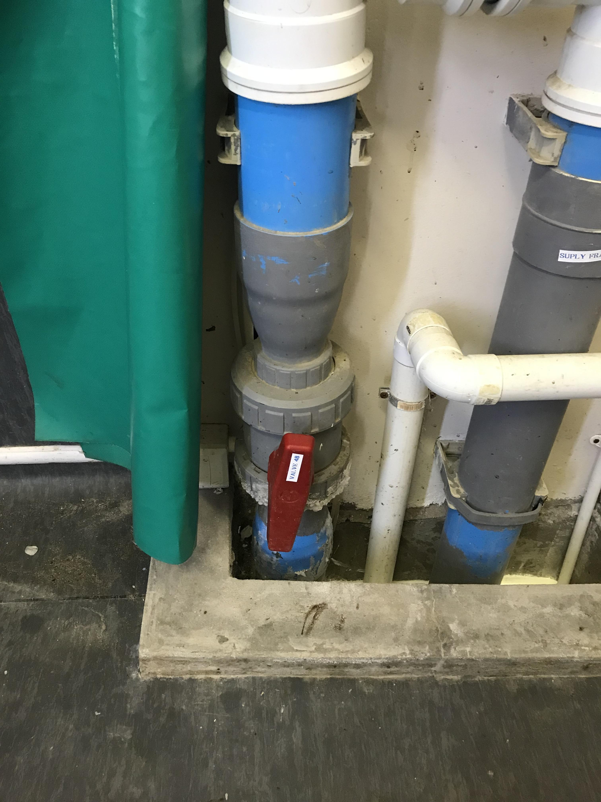

3 Foam Fractionator
The Foam fractionator is found next to the DAF tank (Figure 2.1). It has an outlet and drain valve connected to the outside of it’s main tank (Figure 3.1).

The inner tank consists of an air inlet pipe, water inlet pipe and four collection strainers that convey water to the fractionator’s discharge pipe (Figure 3.2).
3.1 Maintenance
The maintenance procedure described for the Foam fractionator (referred to as “the Fractionator” throughout) should be completed once every year.
3.1.1 Tool preparation
Use the same tools used for the DAF maintenance procedure (Section 2.1.1).
To conduct annual maintenance, the Fractionator has to be drained completely.
3.1.2 Drain the Fractionator
- Close Dump valve (No. 18), found in the Plant room.
- Wait for the water level at the Prosonic HMU 860 to reach 90%.
- Done to ensure enough sea water remains in circulation during the maintenance procedure.
- Turn off the Jetty pump on the Main control switchboard.
- Prevents the intake of more water.
- Turn off the Fractionator blowers on the Main control switchboard (Figure 2.3 (c)).
- Close the Fractionator outlet valve No. 49 (Figure 7.4 (b)).
- Prevents the discharge of more water into the Compensation sump
- Close the Fractionator inlet valve No. 48 (Figure 7.4 (c)).
- Prevents the flow of more water into the Fractionator.
- Open the Fractionator drain valve No. 50 (Figure 7.4 (a)).
- Let the Fractionator drain completely.
3.1.3 Inspect internal plumbing
- Ensure that all pipes, fittings, strainers and any other fixtures required to convey water are appropriately arranged and attached within the tank (Figure 3.2).
- See Section 3.2.3.1 for example of steps taken to realign strainers found at the bottom of the Fractionator.
3.1.4 Clean tank
This will only need to be done if there is a build-up of excess sludge at the bottom of the tank, which is not likely to happen because mostly filtered water enters the Fractionator from the Main tank floor. All cleaning can be done from the top of the Fractionator.
- Skip cleaning procedure (steps 10-21) if the bottom of the Fractionator is already clean.
- Connect a long hose pipe (16mm diameter) to a water tap.
- Spray off any excess sludge in the Waste collection trough around the Fractionator periphery, found approximately 1/3 of the way from the top of the tank.
- Turn off the tap.
- Close the Fractionator drain valve No. 50 (Figure 7.4 (a)).
- Open the Fractionator inlet valve No. 48 (Figure 7.4 (c)).
- Fill a 1/4 of the Fractionator with sea water.
- Close the Fractionator inlet valve (No. 48).
- Fasten a long stick (approx. 2.2m length and 40mm diameter) to the outlet end of the hose pipe with cable ties.
- Lower the pipe into the Fractionator and open the tap.
- Use the water flow from the pipe to help agitate and thoroughly mix the sludge trapped at the bottom of the tank, as well as on the strainers, with the standing water.
- Open the Fractionator drain valve and let the water-sludge mix drain out.
- Continue mixing the sludge during draining.
- Fill a 1/4 of the Fractionator tank up and repeat if sludge not adequately cleared.
- Close the tap and remove the pipe from the tank.
3.1.5 Resume normal operation
Only resume normal system operation if there is no excess sludge build-up at the bottom of the Fractionator.
- Close the Fractionator drain valve (No. 50).
- Open the Fractionator inlet valve (No. 48).
- Turn on the Jetty pump .
- Wait for the Fractionator to fill up.
- Lasts more than 30 minutes.
- Open the Fractionator outlet valve (No. 49).
- Open the Dump valve No. 18 (Figure 2.3 (a)).
- Turn on the Fractionator blowers (Figure 2.3 (c)).
3.2 Repairs
During normal operation the Foam fractionator helps remove excess protein from the recirculated Aquarium water. Air bubbles released from a series of diffusers near the base of the tank, aggregate the suspended protein by exploiting the amphipathicity of protein. This creates a foam that, because of its’ lower density, rises to the Fractionator water surface where it is skimmed off the top. Waste generated through this process is then conveyed to the Fractionator drain valve (Figure 3.1), and discharged along with sludge that may have accumulated at the bottom. The skimmed water settles back into the fractionator. It is then discharged near the Fractionators’ base after passing through four strainers, fastened near the ends of two parallel pipes, which are joined to each other by a central pipe axis (Figure 3.2).
Decreased Fractionator functionality increases the protein concentration of the Aquarium water, which promotes anaerobic conditions and reduces the waters’ clarity. It is therefore important to ensure the Fractionator is always operating optimally.
3.2.1 Inspect internal plumbing
To inspect the internal plumbing, the Fractionator had to be drained of all liquid.
Drain the Fractionator
See Section 3.1.2 for a description of the Fractionator draining procedure.
3.2.2 Problem diagnosis
While conducting further maintenance (Section 3.1), Mr. Evelinu noticed that one half of the strainer manifold (Figure 3.2) was misaligned. More specifically, two strainers along one of the pipes was turned approximately 70\(^\circ\) to the horizontal base i.e., one strainer was raised higher than normal and the other lower than normal.
3.2.3 Tool preparation
The tools used in (Section 2.1.1) were also used here.
Strainer realignment
The skewed strainer manifold did not appear to disrupt the normal functioning of the Fractionator, which determined how the Aquarium’s technical staff chose to rectify the problem.
Strainer realignment can be done from the top of the Fractionator.
- Using a long stick (approx. 2.2m length and 40mm diameter), press down on the raised strainer until the two strainer pipes are parallel to each other.
- Remove the stick from the tank.
Resume normal operation
Only resume normal system operation if there is no excess sludge build-up at the bottom of the Fractionator.
See Section 3.1.4 and Section 3.1.5 for guides detailing Fractionator cleaning and the resumption of normal system operations.